Poster, built out to the whole home page.
You picked Poster, so here it is from the first screen to the footer: all four projects, How I work, the AI workflow, credentials, contact and the footer. Open it on desktop and on your phone. The bar at the bottom switches the theme and the font.
Round 2 · the tour
Every section, top to bottom
Desktop shots at 1440 px. One rule runs through the whole page: every headline is set edge to edge and its letters breathe. Each project then gets its own colour and its own way of showing the product. Live, the projects stack: each one slides over the previous one as you scroll.
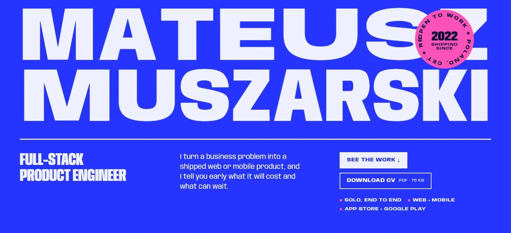
The name is the picture
The letters set themselves on load and widen around the cursor. Below it, a running strip of proof: both stores, Cetuspro, 118 tests, 13 shaders, 30 locales.
After the hero scrolls away, the header's M—M turns into your full name.
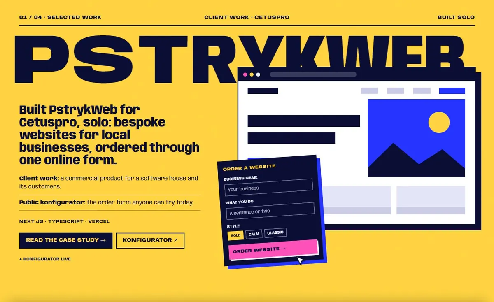
A form, a click, a website
An order form card; a pointer presses "Order website" and the site builds itself in the browser behind it. It shows only what is public: websites for local businesses, ordered through one online form.
Drawn with code, so there are no client screenshots.
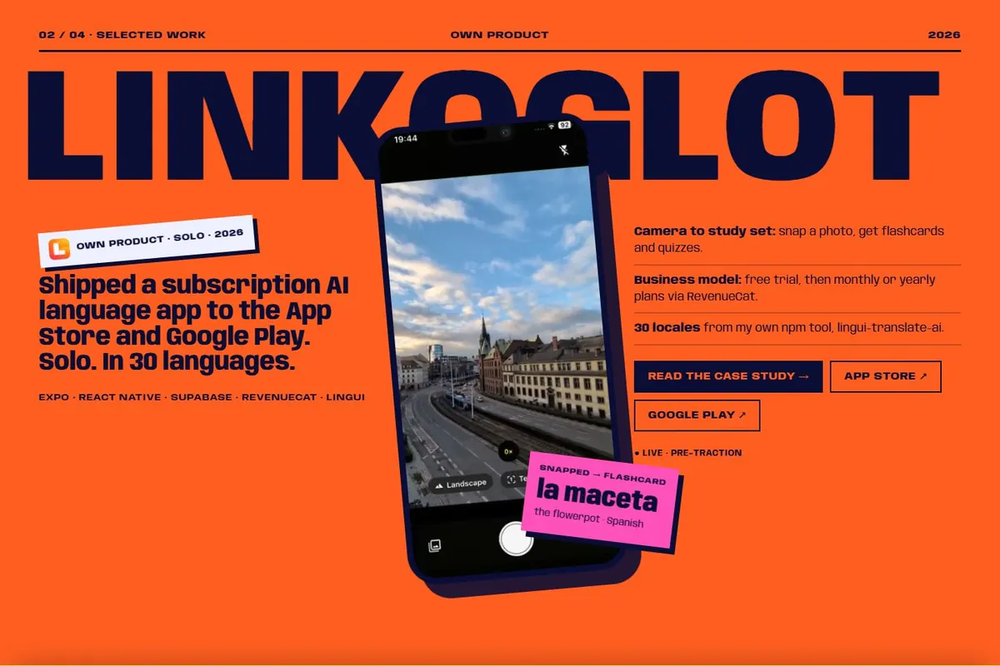
The phone breaks the billboard
The section from round 1, now one chapter of four. The app video plays only while it is on screen.
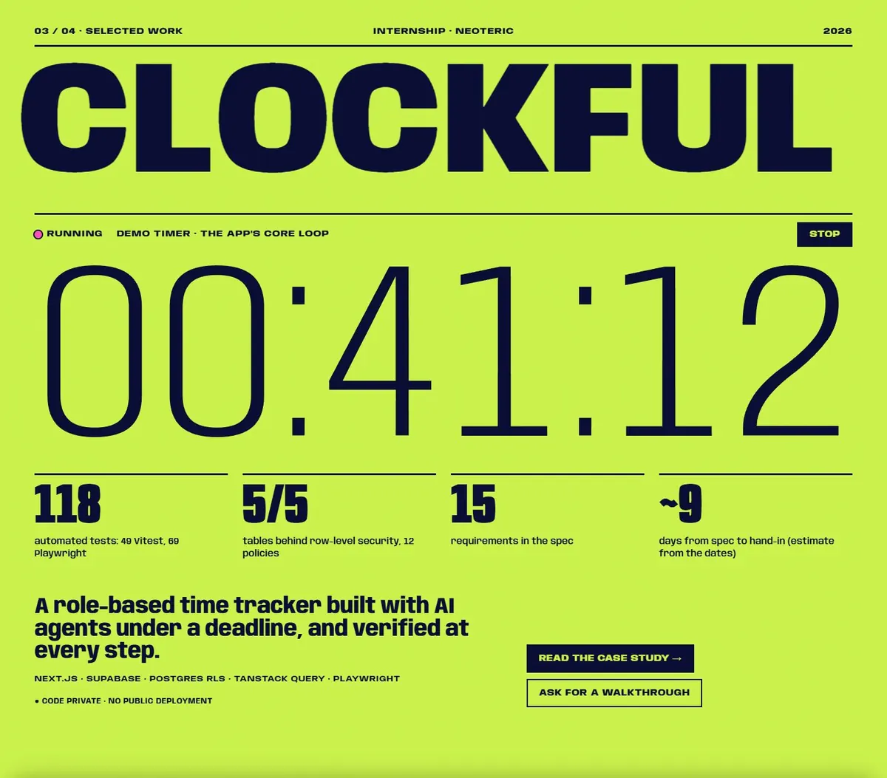
The timer is the poster
A live timer whose digits roll like an odometer, with a working Stop button. It is the app's core loop. Under it are the receipts: 118 tests, row-level security on 5 of 5 tables, 15 requirements, about 9 days.
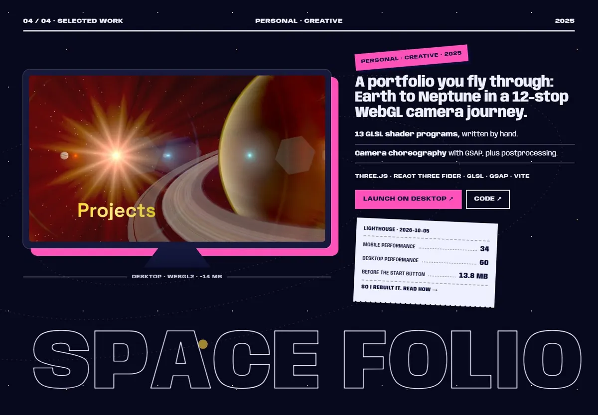
The honest receipt
The old site plays in a monitor, with planets on their orbits behind it. A paper receipt prints its real Lighthouse numbers (mobile 34, desktop 60, 13.8 MB before the start button) and links to why you rebuilt it.
On a phone the button reads "Desktop only · copy link".

Four principles, each with a receipt
Your four proof pillars, each one backed by a fact from a project. Hovering a row inverts it and widens the words.

Delegate. Verify.
A five-step loop, then a board where each gate gets stamped PASS one by one as it comes into view: types, lint, tests, screenshots, accessibility, Lighthouse, your review. Three receipts below: Clockful, this site, lingui-translate-ai.
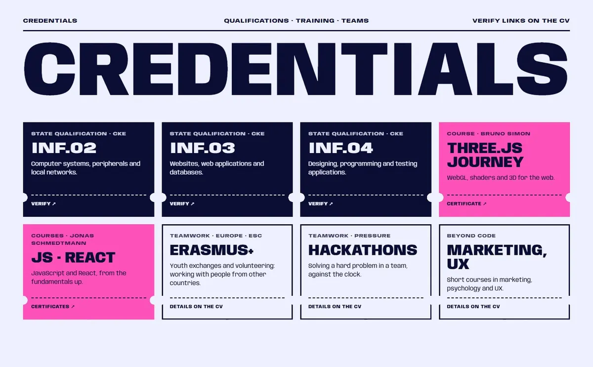
Ticket stubs
A two-row strip of your stack runs above. The credentials are tickets with a tear line: the state qualifications in navy, the courses in pink, the teamwork in outline. On a phone they become a swipe rail.

Two fields and send
Email and message, nothing else. Copy email, LinkedIn, GitHub and the CV sit right under the form.
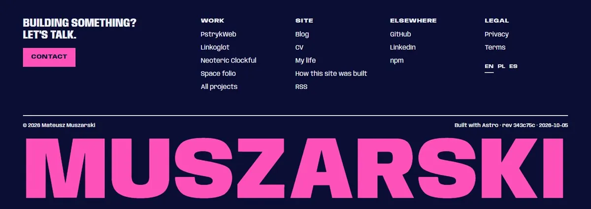
Signed like a poster
The four link columns, the language switch and the build revision, then your surname across the full width.
Round 2 · on a phone
The same page at 390 px
The same content as desktop, in one column. Contact and CV stay in the header. Swipe the row to see more.
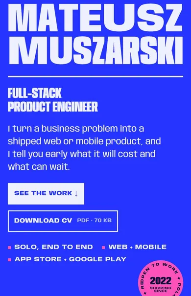
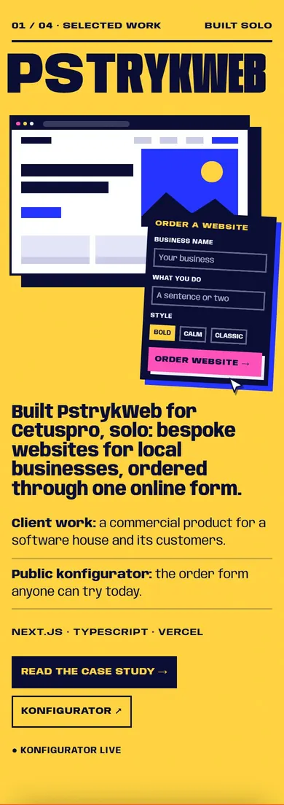
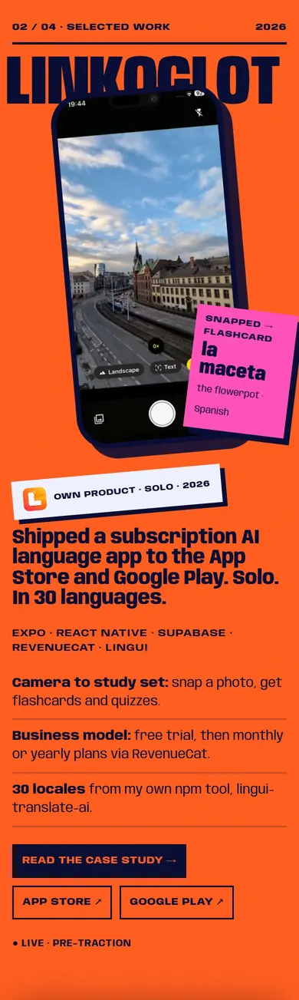
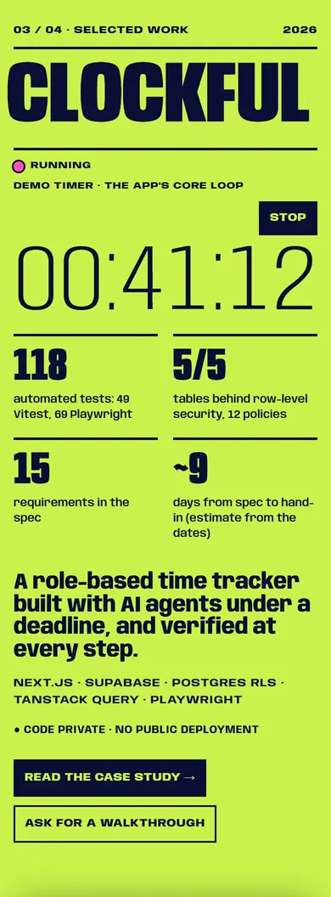
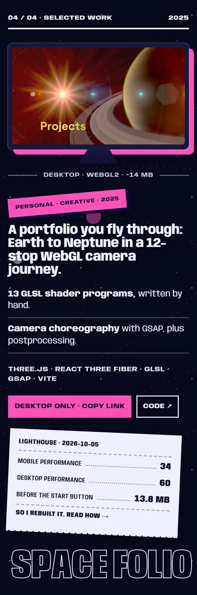
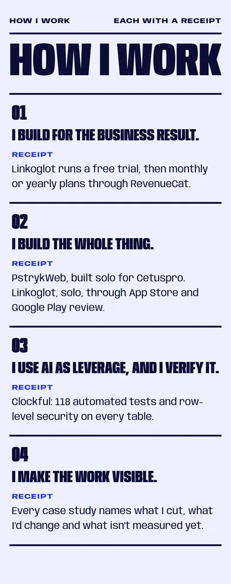
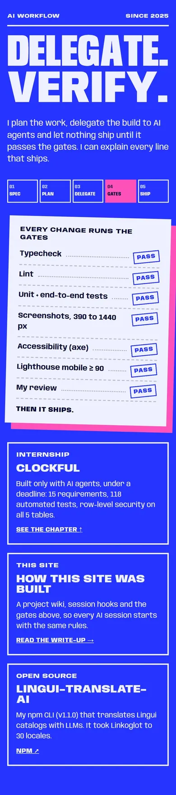
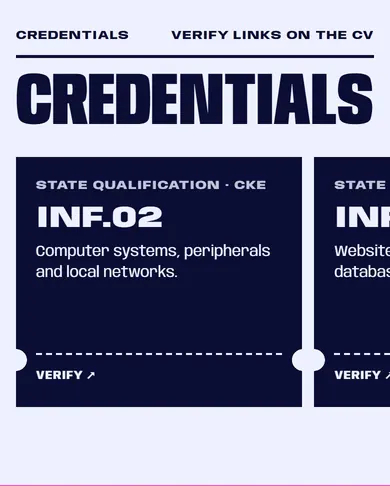
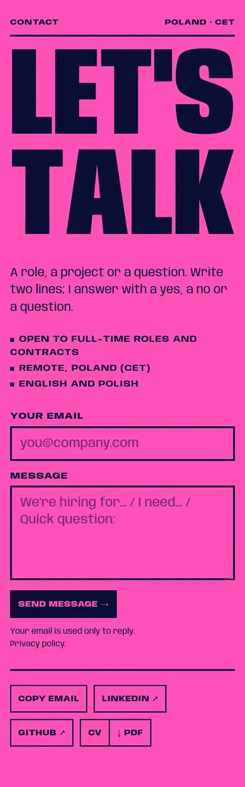
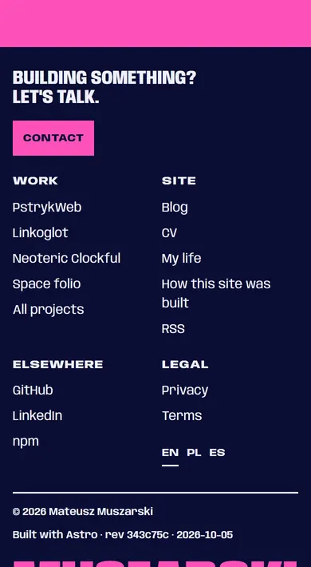
Round 2 · theme and font
Three themes, two fonts
The project chapters keep their own colours in every theme; the theme changes the hero, the sections between the projects and the footer.
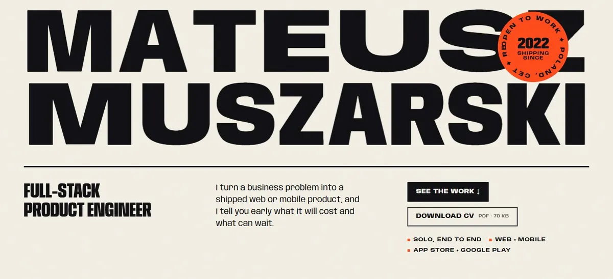
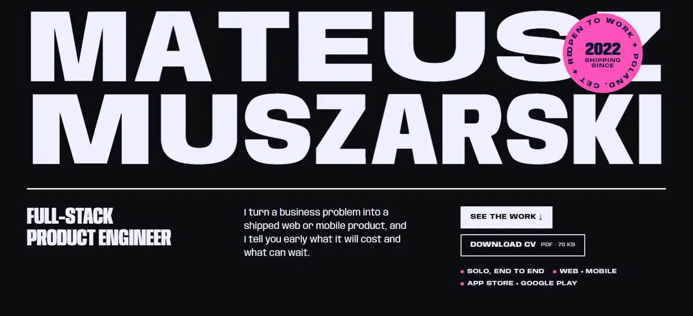
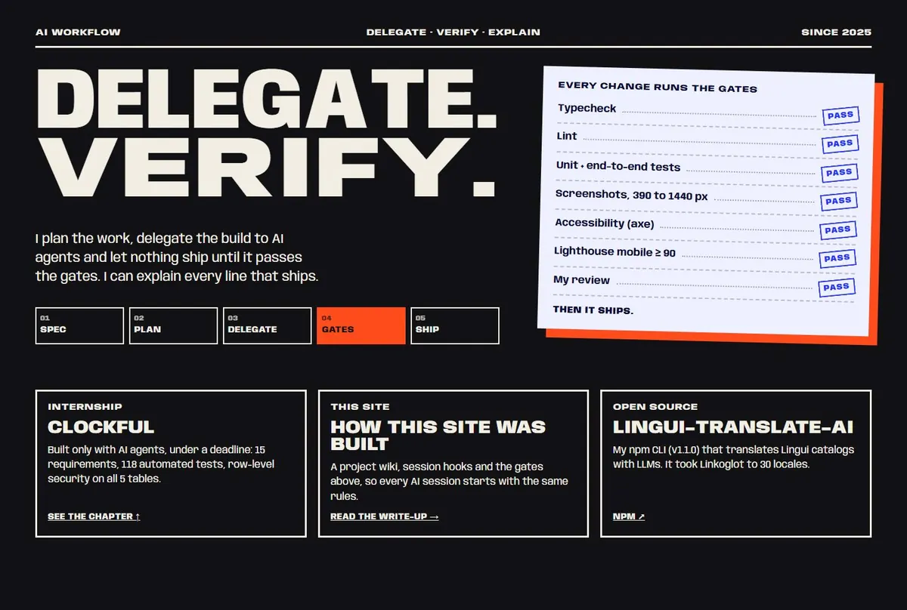
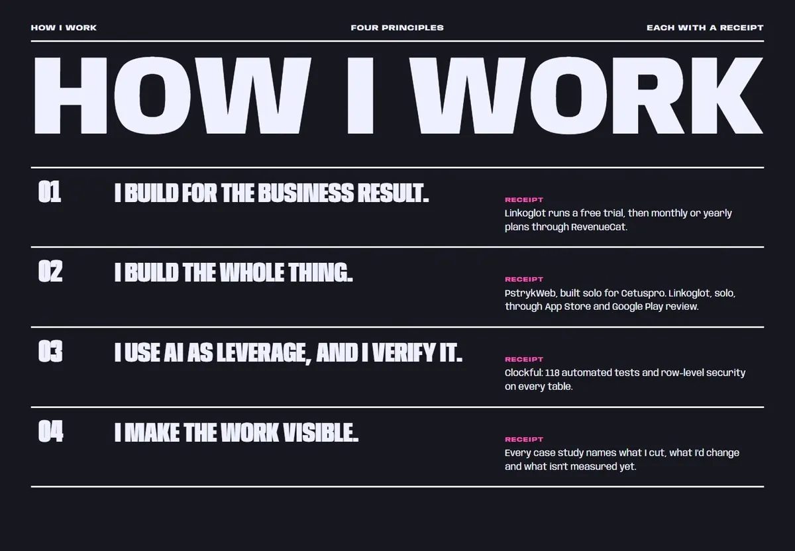
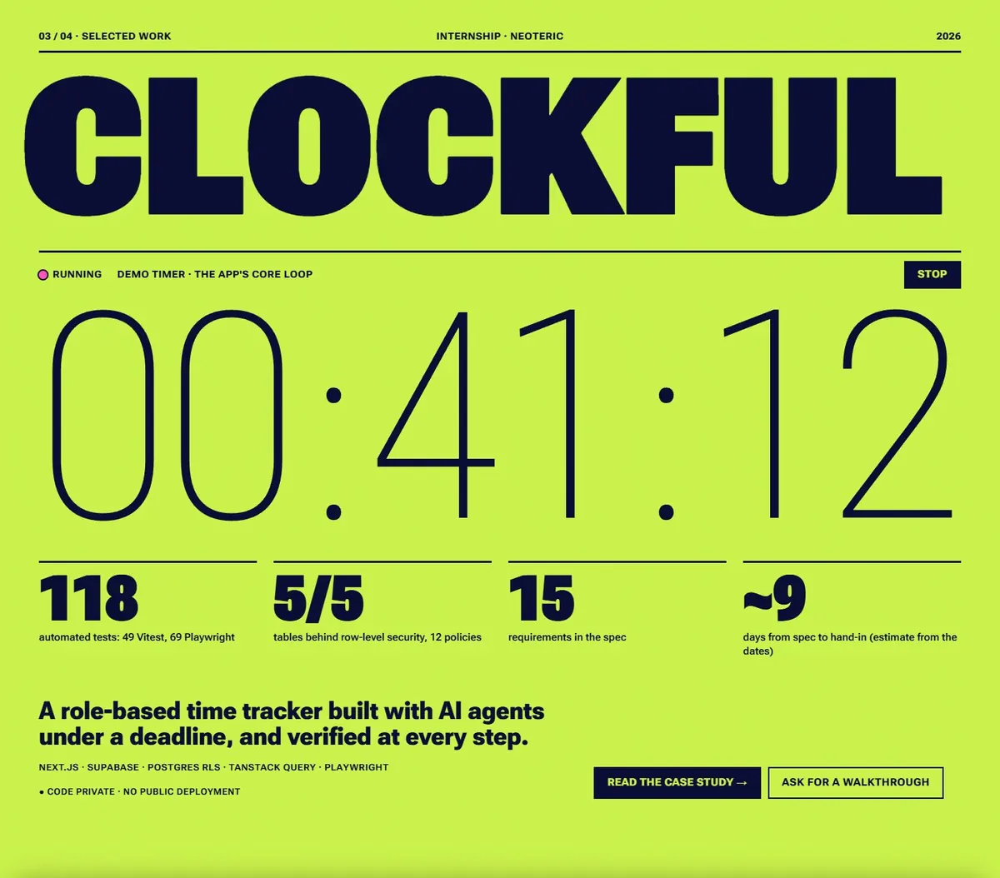
Round 2 · your call
Three answers and I start building
- Theme. My pick: Cobalt for every first visit, with Paper and Ink in the theme toggle; the site remembers the choice.
Or: Paper and Ink follow your system's light or dark setting, and Cobalt is only the brand colour.
- Font. My pick: Anybody. It has the character that gives Poster its professional edge; Roboto Flex is safer and plainer.
- Anything to cut, swap or push further?
For example: a different project order, another colour for a chapter, less motion, or "the AI board is too much".
A short reply is enough, for example "1 yes, 2 yes, 3 nothing". After that I write the new design system and rebuild the header, footer and hero in the real site, one section at a time.
What the comp does not prove yet
- Not tested on a real phone, only in emulated 390 and 1440 px screens.
- No Lighthouse run on the comp; the real build gets one per section.
- The headline fitting runs in the browser here. In the real site it moves to build time, so nothing jumps while fonts load.
Not real yet
- "Open to work", "Poland, CET", "remote" and the languages line wait for your wording.
- The email address, the CV size and the links are placeholders, and the form sends nothing.
- "Client work · Cetuspro" and "Internship · Neoteric" wait for their permission.
- Credential dates, verify links and course names are still to come from you.
- The project videos are temporary: the 332 px App Store preview and a capture of the old space site (its planet textures are Solar System Scope, CC BY 4.0; its lens-dirt texture still needs a licence check).
Round 1 · 5 Oct 2026
The four directions
Each one is a live comp of the hero and one project section (Linkoglot). I recommended Orbit; you picked Poster. They stay here for reference, and parts of them can still be mixed in.


Direction 1
Orbit
The planet becomes the product.
A planet of 52,000 GPU particles sits behind your name, lit like a sunset, with a ring passing behind the type. Scroll to the work and the same particles fly into the outline of the Linkoglot phone.
- Type
- Mona Sans (wide cut), Martian Mono for labels
- Colour
- Midnight indigo, amber light, periwinkle shadow
- Per project
- The particles re-form into that project's device
- Cost
- Raw WebGL2, about 5 KB of JS, one draw call; 20,000 particles on phones; a CSS planet if WebGL is off


Direction 2
Your pick · built out in round 2Poster
Your name, set like a poster.
The name fills the width edge to edge in one variable font. Letters widen around the cursor like an accordion while the line stays exactly flush. Each project gets its own flat colour field and a billboard word.
- Type
- Anybody, a variable font whose width runs from 50 to 150
- Colour
- Cobalt, signal orange, a hot-pink sticker
- Per project
- A new colour field and its name as the billboard
- Cost
- No WebGL, about 2 KB of JS; letters move by transform only, so nothing shifts the layout


Direction 3
Toybox
My building blocks.
Soft clay toys, rendered live in one shader with real soft shadows. Each toy stands for a fact: since 2022, solo, web and mobile, both stores. Touch a fact and its toy jumps. In the work section the phone stands on a toy plinth.
- Type
- Recursive: its casual axis for headings, its mono axis for labels
- Colour
- Sky, butter, tomato, cobalt, mint
- Per project
- The same toys, rearranged around that product
- Cost
- About 4 KB of JS, but the heaviest GPU work of the four; phones would get a lower render scale or a pre-rendered loop


Direction 4
Exhibit
Works, exhibited.
A gallery at night: oxblood walls, spotlights and drifting dust, rendered live, and your cursor is a torch. Each project is a room, with the product on a plinth under a beam and a museum placard written in true facts ("Medium: React Native, Supabase").
- Type
- Bodoni Moda, Hanken Grotesk
- Colour
- Oxblood, ivory, brass
- Per project
- A room, a beam and its own placard
- Cost
- One full-screen shader, about 2 KB of JS, cheap on phones